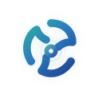

A1
巡检智能体
集群与服务器健康巡检，生成评分、发现项和定时报告。
输出：详细巡检报告

Xing-Cloud运维智能体平台统一资产、指标、日志、Kubernetes、告警、变更、任务与工单，让每一次判断都有证据，每一次处置都有承接。
资产、指标、日志、告警和K8S状态分布在不同系统，排障不断切换页面。
重复告警、状态抖动和缺少影响范围，让值班人员难以判断优先级。
排查路径依赖个人经验，日志、事件和变更证据难以稳定复用。
研判结论停留在消息里，无法自然进入任务、工单、Runbook和复盘。
让不同角色围绕同一个业务上下文工作：有人发现、有人取证、有人研判、有人关联变更、有人生成处置手册，最终由平台统一汇总。
集群与服务器健康巡检，生成评分、发现项和定时报告。
规则求值、降噪、通知、交互处置与研判调度。
历史基线、多算法投票和趋势偏离识别。
关联指标、K8S、事件、日志、变更和图谱证据。
检索多种日志源，提取异常模式、排行和关键样本。
关联发布、工单、配置和事件时间线，识别触发点。
匹配处置步骤，生成Runbook、任务或工单草稿，并沉淀复盘知识。
业务上下文编码：sre
统一环境身份与数据范围
| 对象 | 当前值 | 状态 |
|---|---|---|
| 节点CPU使用率 | 6.19% | 正常 |
| 节点内存使用率 | 30.98% | 正常 |
| API Server P99 | 24ms | 正常 |
| 磁盘I/O | 5.74 MB/s | 关注 |
| PVC使用率 | 45.89% | 正常 |
| 巡检方式 | 范围 | 结果 |
|---|---|---|
| 集群综合巡检 | K8S + 节点 + 存储 + 日志 | 详细报告 |
| 服务器巡检 | 主机资源 + 网络 + 进程 | 风险排行 |
| 立即发送 | 指定业务上下文 | 飞书/企微/邮件 |
| 每日/每周 | 新增或恶化问题 | 定时报告 |
发现项按指纹去重，健康分透明扣分，并与上次成功巡检比较变化。
输出：候选变更、时间相关性、受影响资产和验证项。
输出：可复用手册、待确认任务、工单草稿和复盘知识。
统一执行主机、Playbook和K8S任务，记录状态、耗时和结果。
事务工单、审批流和责任人协作，承接跨团队处置。
发布、验证和回滚记录进入变更时间线，反哺后续研判。
按角色控制页面、接口、数据范围和动作权限。
Action、Skill与MCP明确工具范围和输入合同。
处置先形成草稿，再由有权限的用户确认执行。
长任务支持停止生成、超时和部分结果保留。
从发现异常、收集证据、研判根因，到生成Runbook、承接任务和沉淀复盘，七类智能体围绕同一业务上下文持续协作。